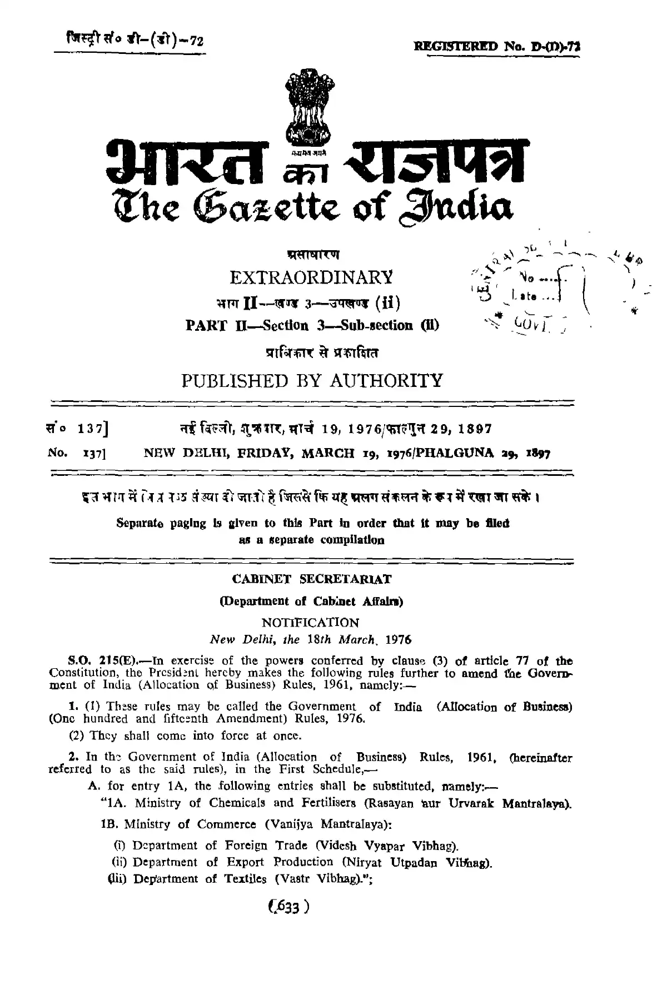
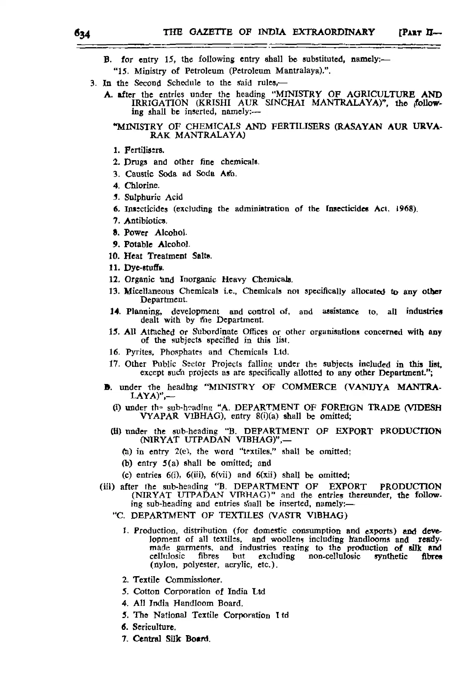
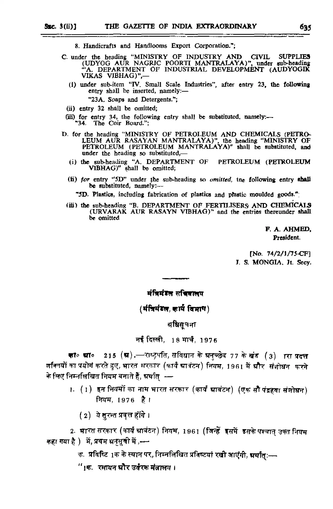
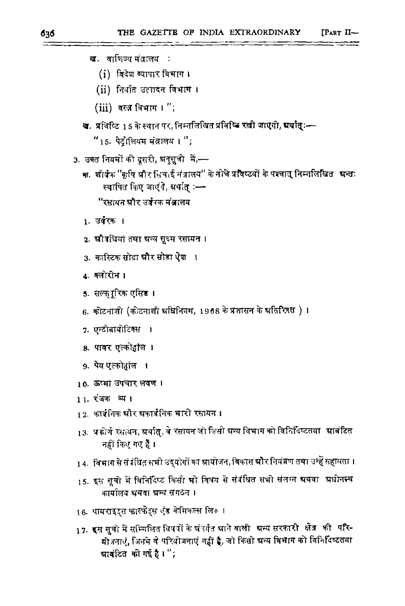
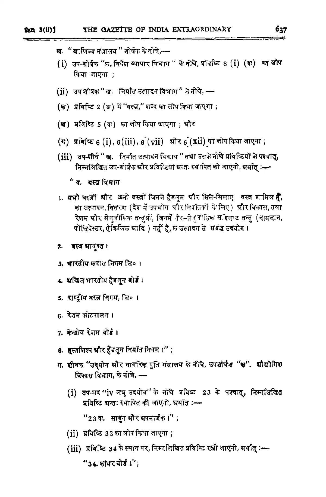
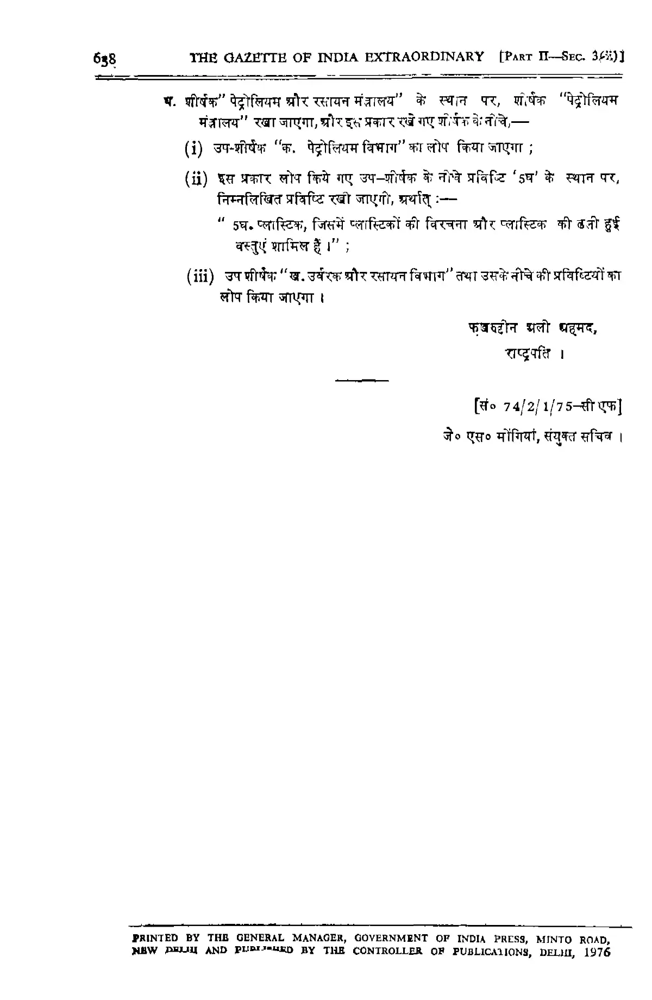

Amendment #115 (S.O. 215(E), 1976)
15 changes: 2 to the First Schedule, 13 to the Second Schedule. 13 applied2 not applied
What it did to the ministries
- splitMinistry of Petroleum and Chemicals splits into Ministry of Petroleum (12) and Ministry of Chemicals and Fertilisers (11) change 1, 2, 3, 12, 13, 14 · histories: Petroleum and Chemicals, Petroleum, Chemicals and Fertilisers
- grewMinistry of Commerce grows from 15 to 23 subjects change 1, 3, 4, 5, 6, 7 · histories: Commerce
The order, page by page
Page 1 of 6

1Schedule 1 › entry 1A
- 1A. Ministry of Chemicals and Fertilisers
- 1B. Ministry of Commerce
- i. Department of Foreign Trade
- ii. Department of Export Production
- iii. Department of Textiles
applied at schedule 1 › ministry 1A in the Rules after #115
Page 2 of 6

2345678Schedule 1 › entry 15
- 15. Ministry of Petroleum
applied at schedule 1 › ministry 15 in the Rules after #115
after Schedule 2 › MINISTRY OF AGRICULTURE_AND IRRIGATION
- MINISTRY OF CHEMICALS AND FERTILISERS
- 1. Fertilisers.
- 2. Drugs and other fine chemicals.
- 3. Caustic Soda ad Soda Aso
- 4. Chlorine.
- 5. Sulphuric Acid
and 12 more
- 6. Insecticides (excluding the administration of the Insecticides Act, 1968).
- 7. Antibiotics.
- 8. Power Alcohol.
- 9. Potable Alcohol.
- 10. Heat Treatment Salts.
- 11. Dye-stuffs.
- 12. Organic and Inorganic Heavy Chemicals.
- 13. Micellaneous Chemicals i.e., Chemicals not specifically allocated to any other Department.
- 14. Planning, development and control of, and assistance to, all industries dealt with by the Department.
- 15. All Attached or Subordinate Offices or other organisations concerned with any of the subjects specified in this list.
- 16. Pyrites, Phosphates and Chemicals Ltd.
- 17. Other Public Sector Projects falling under the subjects included in this list except such projects as are specifically allotted to any other Department.
applied at schedule 2 › ministry MINISTRY OF CHEMICALS AND FERTILISERS in the Rules after #115
Schedule 2 › MINISTRY OF COMMERCE › DEPARTMENT OF FOREIGN TRADE › entry 8 › item i › item a
applied at schedule 2 › ministry MINISTRY OF COMMERCE › department A › group_heading III › entry 8 › item i › item a in the Rules after #115
Schedule 2 › MINISTRY OF COMMERCE › DEPARTMENT OF EXPORT PRODUCTION › entry 2 › item e
applied at schedule 2 › ministry MINISTRY OF COMMERCE › department B › entry 2 › item e in the Rules after #115
Schedule 2 › MINISTRY OF COMMERCE › DEPARTMENT OF EXPORT PRODUCTION › entry 5 › item a
applied at schedule 2 › ministry MINISTRY OF COMMERCE › department B › entry 5 › item a in the Rules after #115
Schedule 2 › MINISTRY OF COMMERCE › DEPARTMENT OF EXPORT PRODUCTION › entry 6 › item i; Schedule 2 › MINISTRY OF COMMERCE › DEPARTMENT OF EXPORT PRODUCTION › entry 6 › item iii; Schedule 2 › MINISTRY OF COMMERCE › DEPARTMENT OF EXPORT PRODUCTION › entry 6 › item vii; Schedule 2 › MINISTRY OF COMMERCE › DEPARTMENT OF EXPORT PRODUCTION › entry 6 › item xii
not applied (the change could not be placed in the Rules as read; see How this document was read)
after Schedule 2 › MINISTRY OF COMMERCE › DEPARTMENT OF EXPORT PRODUCTION
- C. DEPARTMENT OF TEXTILES (VAŠTR VIBHAG)
- 1. Production, distribution (for domestic consumption and exports) and development of all textiles, and woollens including handlooms and readymade garments, and industries reating to the production of silk and cellulosic fibres but excluding non-cellulosic synthetic fibres (nylon, polyester, acrylic,…
- 2. Textile Commissioner.
- 5. Cotton Corporation of India Ltd
- 4. All India Handloom Board.
- 3. The National Textile Corporation I td
and 3 more
- 6. Sericulture.
- 7. Central Silk Board. Sac. 3 (ii) 1
- 8. Handicrafts and Handlooms Export Corporation.
applied at schedule 2 › ministry MINISTRY OF COMMERCE › department C in the Rules after #115
read page break
Page 3 of 6

9101112131415after Schedule 2 › MINISTRY OF INDUSTRY AND CIVIL SUPPLIES › DEPARTMENT OF INDUSTRIAL DEVELOPMENT › IV. Small Scale Industries › entry 23
- 23A, Soaps and Detergents.
not applied (the change could not be placed in the Rules as read; see How this document was read)
Schedule 2 › MINISTRY OF INDUSTRY AND CIVIL SUPPLIES › DEPARTMENT OF INDUSTRIAL DEVELOPMENT › entry 32
applied at schedule 2 › ministry MINISTRY OF INDUSTRY AND CIVIL SUPPLIES › department A › group_heading VI › entry 32 in the Rules after #115
Schedule 2 › MINISTRY OF INDUSTRY AND CIVIL SUPPLIES › DEPARTMENT OF INDUSTRIAL DEVELOPMENT › entry 34
- 34. The Coir Board.
applied at schedule 2 › ministry MINISTRY OF INDUSTRY AND CIVIL SUPPLIES › department A › group_heading VI › entry 34 in the Rules after #115
Schedule 2 › MINISTRY OF PETROLEUM AND CHEMICALS
- MINISTRY OF PETROLEUM
applied at schedule 2 › ministry MINISTRY OF PETROLEUM in the Rules after #115
Schedule 2 › MINISTRY OF PETROLEUM › DEPARTMENT OF PETROLEUM
applied at schedule 2 › ministry MINISTRY OF PETROLEUM › department A in the Rules after #115
Schedule 2 › MINISTRY OF PETROLEUM › entry 5D
- 5D. Plastics, including fabrication of plastics and plastic moulded goods.
applied at schedule 2 › ministry MINISTRY OF PETROLEUM › entry 5D in the Rules after #115
Schedule 2 › MINISTRY OF PETROLEUM › DEPARTMENT OF FERTILISERS AND CHEMICALS
applied at schedule 2 › ministry MINISTRY OF PETROLEUM › department B in the Rules after #115
Page 4 of 6

Page 5 of 6

Page 6 of 6

How this document was read
Edits to the reading
| Date | By | Edit | Before → after |
|---|---|---|---|
| 12 November 2026 | claude | word corrected | |
| 12 November 2026 | claude | word corrected |
Known issues
| Change | Issue | Known as |
|---|---|---|
| 7 | change 7: no item iii under schedule 2 › ministry MINISTRY OF COMMERCE › department B › entry 6 | Items |
| 9 | change 9: no entry 23 under schedule 2 › ministry MINISTRY OF INDUSTRY AND CIVIL SUPPLIES › department A › group_heading IV | Entries not in the state |
From the Government of India (Allocation of Business) Rules, 1961 and their amendments, as published by the Cabinet Secretariat (cabsec.gov.in), read by orgpedia. The readings of the older scanned gazettes have known gaps.